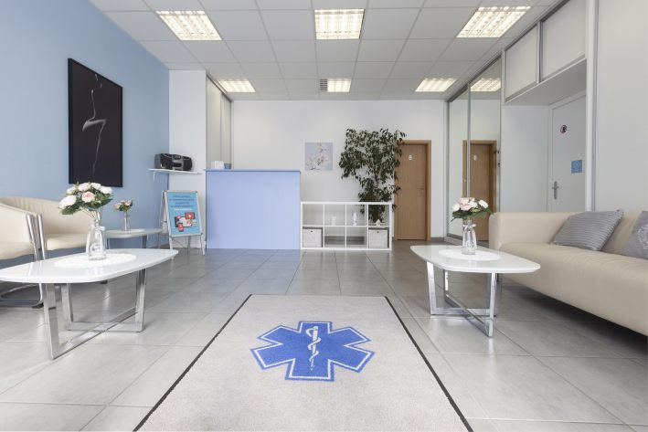
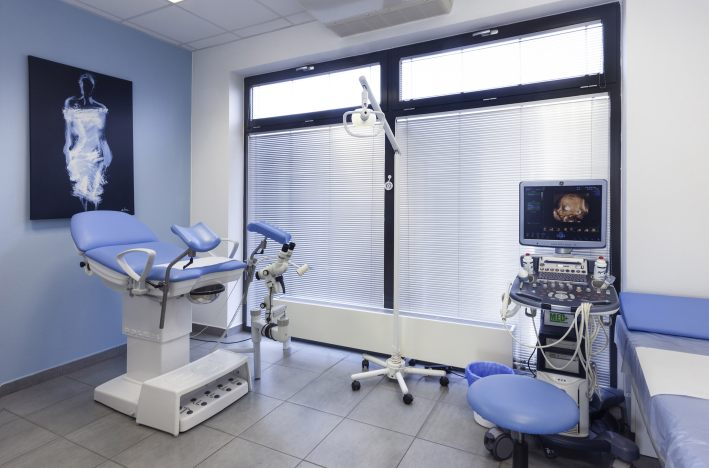
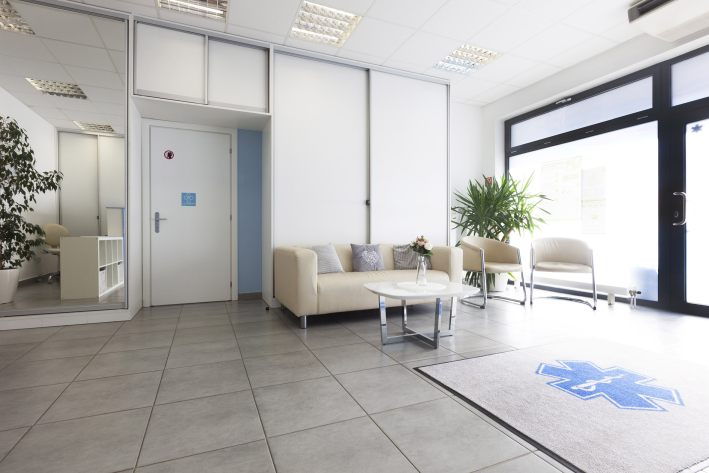
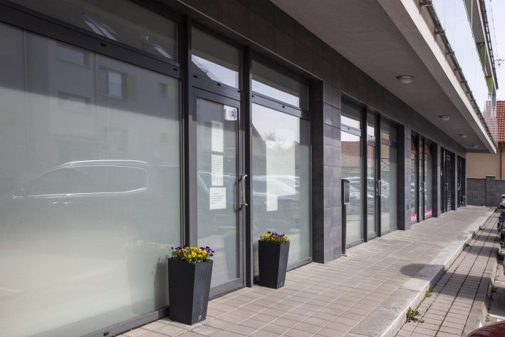
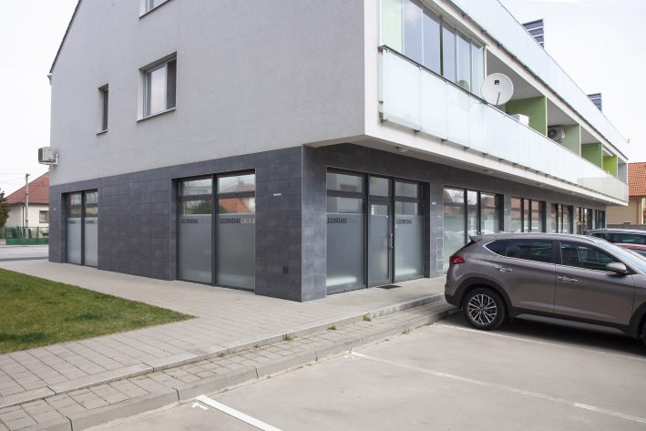

Doc. MUDr. RNDr. Juraj Šimko, PhD.
Gynekológ · pôrodník · genetik
Od preventívnej prehliadky cez tehotenstvo až po pôrod. Odborný tím, diskrétne prostredie a presný termín bez zbytočného čakania.

Ambulancia poskytuje komplexnú gynekologickú a prenatálnu starostlivosť v Senci od roku 2004.
Prevencia, diagnostika, tehotenská poradňa aj drobné zákroky na jednom pracovisku.
Objednať vyšetrenie
Kontinuálna prenatálna starostlivosť a tím, ktorý pozná priebeh vášho tehotenstva.
Lekári Fed-Gyn pôsobia aj na II. gynekologicko-pôrodníckej klinike UNB Ružinov a v prípade potreby môžu koordinovať ďalšiu diagnostiku, liečbu či pôrod.
Lekári sa striedajú. Konkrétneho lekára si vyžiadajte pri objednávaní.
Gynekológovia, pôrodníci, odborníci na fetálnu medicínu a zdravotnícky personál pod jednou strechou.
Gynekológ · pôrodník · genetik
Gynekológ · pôrodník · špecialistka materno-fetálnej medicíny
Gynekológ · pôrodník
Špecializovaná pôrodná asistentka
Špecializovaná novorodenecká sestra · recepčná
Pri fyziologickej gravidite odporúčame mať veci zbalené najneskôr v 37. týždni, pri rizikovej v 34. týždni.
Ambulancia sa nachádza na prízemí nového polyfunkčného objektu, je klimatizovaná a bezbariérová.



Na Bratislavskej ulici, za kruhovým objazdom pri Tesco. Ambulancia je na prízemí polyfunkčného objektu.